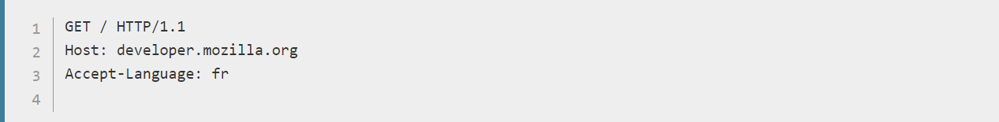
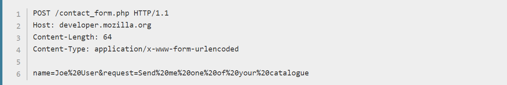

Em protocolos cliente-servidor, como o HTTP, sessões consistem de três partes:
Na versão HTTP/1.1 a conexão não é mais fechada após a terceira etapa completar-se, mas é garantida ao cliente uma nova requisição, implicando na possibilidade da segunda e terceira etapa serem novamente realizadas quantas vezes forem desejadas.
Em protocolos cliente-servidor é o cliente quem estabelece as conexões. Abrir uma conexão HTTP significa iniciar uma conexão na camada de transporte subjacente, geralmente uma conexão usando o protocolo TCP.
Usando o protocolo TCP, a porta padrão para um servidor HTTP em um computador é a porta 80, porém outras portas podem ser utilizadas, como a 8000 ou 8080. A URL da página a se requisitar contém o nome do domínio e o número da porta, embora este último pode ser omitido caso a porta seja a 80. Leia Identificando recursos na Web para mais informações.
Depois que a conexão é estabelecida, o user-agent pode enviar a solicitação (um user-agent normalmente é um navegador Web, podendo ser também qualquer outra coisa, como um crawler, por exemplo). Uma solicitação de cliente consiste em diretivas de texto, separadas por quebras de linhas (CRLF), divididas em três blocos:
Buscando a página raiz do developer.mozilla.org (http://developer.mozilla.org/), e dizendo ao servidor que o user-agent preferiria a página em francês, se possível:
Observe que a linha final vazia separa o bloco de dados do bloco de cabeçalho. Como não há nenhum Content-Length fornecido em um cabeçalho HTTP, esse bloco de dados é apresentado vazio, marcando o final dos cabeçalhos, permitindo que o servidor processe a solicitação no momento em que recebe essa linha vazia.
Por exemplo, enviando o resultado de um formulário:
